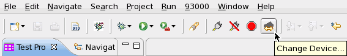

Change Device button
The Change Device button is on the V93000 menu icon bar of the SmarTest Eclipse Work Center. You can also access this button by clicking the menu 93000 > Device > Change Device.

When you click the Change Device button, you can perform the following actions:
- changing the active device
- Editing technology data
Functional changes
- Introduced before SmarTest 6.3.2
- SmarTest 6.5.2: You create new device in the New Device Wizard.